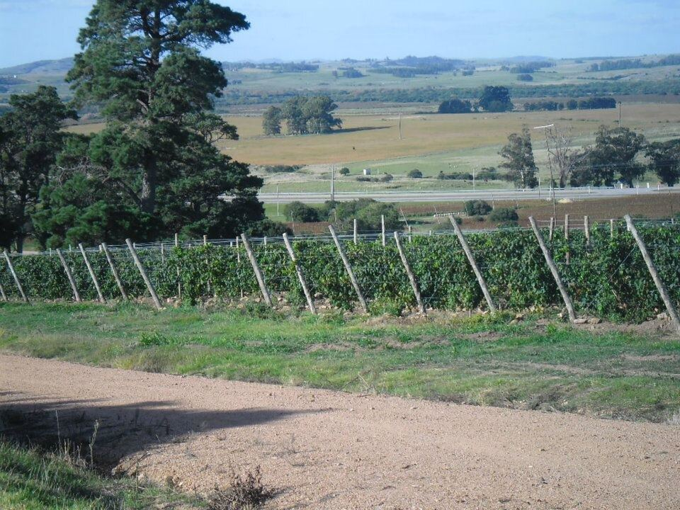

Uruguay
Uruguay, con un clima templado y húmedo de influencia atlántica, ha hecho de la Tannat su uva emblemática. Su viñedo, en gran parte en manos de bodegas familiares de origen inmigrante, se concentra en el sur del país, en torno a Montevideo y Canelones.

Historia
Aunque la vid llegó al Río de la Plata en la época colonial, la viticultura uruguaya moderna nació en la segunda mitad del siglo XIX gracias a los inmigrantes europeos, sobre todo vascos, franceses, italianos y españoles. Dos nombres se asocian a sus comienzos: Pascual Harriague, de origen vasco francés, que en la década de 1870 introdujo la Tannat en el departamento de Salto, en el noroeste del país, y Francisco Vidiella, que realizó plantaciones cerca de Montevideo con variedades traídas de Europa. La Tannat se adaptó tan bien que durante mucho tiempo se la conoció localmente como «Harriague», en honor a quien la había introducido.
A finales del siglo XIX llegó la filoxera, y la replantación se hizo sobre portainjertos americanos. Durante buena parte del siglo XX el sector, formado por numerosas bodegas familiares, abasteció sobre todo al mercado interno con vinos de consumo corriente. A partir de los años setenta y ochenta comenzó una renovación profunda: se replantaron viñedos con clones seleccionados, se modernizaron las bodegas y se fijó el objetivo de exportar vinos de calidad. En 1987 se creó el Instituto Nacional de Vitivinicultura (INAVI), que regula y promueve el sector. Desde entonces la Tannat se ha convertido en la carta de presentación del país, y en las últimas décadas han surgido nuevas zonas, en especial cerca de la costa atlántica.
Clima
A diferencia de la mayoría de las regiones vitícolas sudamericanas, Uruguay no tiene montañas altas ni un clima seco. Su clima es templado y húmedo, con lluvias repartidas a lo largo del año y una influencia marítima muy marcada, tanto del océano Atlántico como del amplio estuario del Río de la Plata. Los veranos son cálidos pero moderados por las brisas, y las noches frescas ayudan a conservar la acidez. La humedad obliga a cuidar especialmente la sanidad del viñedo, mediante sistemas de conducción que favorecen la aireación de los racimos y un manejo atento del follaje. Los vinos suelen mostrar una frescura y un grado alcohólico más moderados que los de otros países del Cono Sur.
Suelos y regiones
El viñedo se concentra en el sur, en los departamentos de Canelones, que reúne la mayor parte de la superficie, y Montevideo, sobre suelos arcillosos y limosos de buena retención de agua. En el sureste, el departamento de Maldonado ha desarrollado una viticultura reciente en colinas cercanas al Atlántico, sobre suelos de granito alterado. Otras zonas son Colonia, en el oeste, junto al Río de la Plata; San José y Florida, en el centro-sur; y Rivera, en la frontera con Brasil, de suelos arenosos, además de Salto y Paysandú en el noroeste, de clima más cálido.
Variedades y estilos
La Tannat, originaria del suroeste de Francia, es la variedad emblemática. En Uruguay da tintos de color profundo, taninos firmes y acidez viva, que se elaboran en estilos muy diversos: jóvenes y frutales, con crianza en barrica, en ensamblaje con Merlot, Cabernet Franc o Cabernet Sauvignon y también rosados y algunos dulces. El país cultiva además Merlot, Cabernet Sauvignon, Cabernet Franc, Syrah y Pinot Noir entre las tintas. Entre las blancas destacan la Sauvignon Blanc, la Chardonnay y, sobre todo en los últimos años, la Albariño, que ha encontrado en el clima húmedo y fresco de la costa unas condiciones afines a las de su Galicia natal. También se elaboran espumosos.
Normativa
El INAVI regula la producción y el etiquetado. Los vinos de calidad se clasifican como VCP (Vino de Calidad Preferente), que deben elaborarse con variedades de Vitis vinifera y embotellarse en origen, frente a los vinos comunes destinados al consumo corriente. El país ha avanzado además en la definición de indicaciones geográficas para sus zonas vitícolas.
Regiones y denominaciones
Canelones
Departamento vitícola · El departamento de Canelones, al norte y al este de Montevideo, concentra la mayor parte del viñedo de Uruguay. Sobre suelos arcillosos y bajo la influencia del Río de la Plata y del Atlántico, es el corazón de la Tannat uruguaya y la sede de muchas bodegas familiares históricas.
Maldonado
Departamento vitícola · Maldonado, en el sureste de Uruguay, es una zona vitícola joven situada en colinas próximas al océano Atlántico. Sus suelos de granito alterado y su clima fresco y ventoso dan Albariño, Tannat y otras variedades de perfil tenso y marcada frescura.